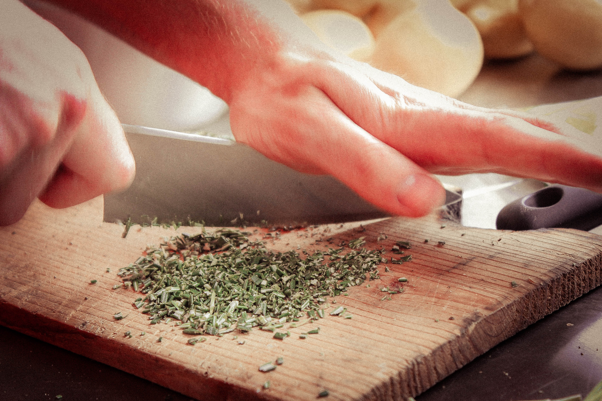

<div id="content" class="col-8 col-12-medium">
    <article class="box post">
        <header>
            <h3>Le kit de survie</h3>
        </header>
        <p>Privilégiez la qualité à la quantité. Dans la vie quotidienne, vous n'avez pas besoin d'un robot qui coûte un SMIC. Vous n'avez pas non plus besoin d'une batterie complète de casserole en cuivre qui s'emboîtent parfaitement les unes dans les autres. Ça peut être joli, pratique, mais ce n'est pas essentiel. Voici donc la liste de ce que je considère essentiel pour pouvoir cuisiner correctement.</p>
        <h5>Un couteau</h5>
        <p>Je le place volontairement avant les ustensiles de cuisson. Même pour une salade, vous aurez besoin d'un bon couteau. C'est le seul ustensil essentiel pour lequel je vous recommande de payer pour de la qualité. Prenez le suffisamment grand pour pouvoir facilement s'en servir pour hacher ou concasser à deux mains. Préférez une lame droite, plus polyvalente qu'une lame avec des dents.</p>
        <span class="image featured">
            <!-- Photo by Lena Kudryavtseva on Unsplash -->
            
        </span>
        <h5>Un fusil à aiguiser</h5>
        <p>Un couteau ne sert à rien s'il ne coupe pas. Contrairement à ce qu'on croit généralement, plus un couteau est coupant, moins il est dangeux. Si votre couteau coupe mal, vous aurez besoin de forcer, et c'est là que vous risquez de déraper et de vous entaillez une main. Aiguisez donc votre couteau régulièrement, environ une fois par mois.</p>
        <h5>Une sauteuse</h5>
        <p>Si vous ne devez posséder qu'un seul ustensil de cuisson, une sauteuse est le plus versatile. Même si ce n'est pas le plus pratique, vous pourrez vous en servir à la fois comme poêle et comme casserolle. Prenez-en une avec un couvercle, il permet de porter à ébullition plus vite, ou bien de cuire lentement à l'étouffé, en gardant l'humidité. Aussi, choisissez une matière simple: inox ou fonte. Les matières anti-adhésives ou exotiques - j'en ai vu une fois à la cire d'abeille… - sont chères et le plus souvent inutiles. De plus, une matière simple vous autorise à mettre directement la sauteuse dans le four.</p>
        <h5>Une manique</h5>
        <p>Pour éviter de vous brûler les mains avec une sauteuse qui sort du four.</p>
        <h5>Un pèle-tomate</h5>
        <p>C'est une sorte d'épluche légumes amélioré, avec des dents. Avec ça, vous pouvez éplucher sans effort tous les légumes, y compris les courges. Si possible, prenez un modèle où vous pouvez remplacer la lame si elle devient émoussée ou se casse.</p>
        <h5>En résumé</h5>
        <ul>
            <li>Un bon couteau, et de quoi l'affûter</li>
            <li>Une sauteuse, et une manique pour la tenir</li>
            <li>Un pèle-tomate</li>
        </ul>
        <p>Ce n'est pas l'idéal, mais en cas de buget limité, ce kit de survie vous permettra de faire la plupart des plats sans problème. Notez d'ailleurs qu'il ne contient aucune appareil électrique. Je pense que ce qui manque le plus ici est un mixeur plongeant, qui permet de faire soupe et purrée facilement, mais j'y reviendrai dans un prochain article.</p>
        <div class="fb-share-button" data-href="https://www.spatuleetspaghetti.fr/le-materiel.html" data-layout="button" data-size="large"><a target="_blank" href="https://www.facebook.com/sharer/sharer.php?u=https%3A%2F%2Fwww.spatuleetspaghetti.fr%2Fle-materiel.html&amp;src=sdkpreparse" class="fb-xfbml-parse-ignore">Partager</a></div>
    </article>
</div>